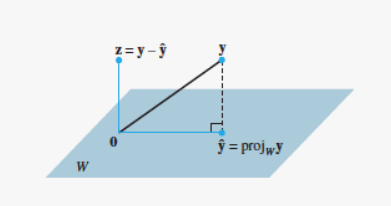
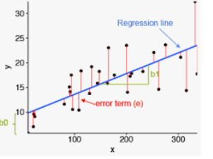

With the usual dot product defined by \[\mathbf{x}\cdot \mathbf{y}=\sum_{i\leq n}x_iy_i=
\begin{bmatrix}x_1&x_2&\cdots&x_n\end{bmatrix}
\begin{bmatrix}y_1\\ y_2\\ \vdots\\ y_n\end{bmatrix}\]
\(\mathbb{R}^n\) has:
A norm given by \(\|\mathbf{x}\|=\sqrt{\sum_{i\leq n}|x_i|^2}\)
A distance given by \(d(\mathbf{x},\mathbf{y})=\|\mathbf{x}-\mathbf{y}\|\)
A notion of orthogonality (\(\mathbf{x}\) and \(\mathbf{y}\) are orthogonal if \(\mathbf{x}\cdot \mathbf{y}=0\))
Pythagorean Theorem: If \(\mathbf{x}\) and \(\mathbf{y}\) are orthogonal, then \(\|\mathbf{x}+\mathbf{y}\|^2=\|\mathbf{x}\|^2+\|\mathbf{y}\|^2\).
Projection Theorem
Suppose that \(W\subset\mathbb{R}^n\) is a subspace and \(\mathbf{y}\in \mathbb{R}^n\). Then there is a unique vector \(\hat{\mathbf{y}}\in W\) that is closest to \(\mathbf{y}\). That is
Moreover, \(\hat{\mathbf{y}}\) is characterized by \(\mathbf{y}-\hat{\mathbf{y}}\in W^\perp\) and \(\hat{\mathbf{y}}\in W\).

Projection Theorem for \(\text{col}(A)\)
Suppose that \(A=[\mathbf{v}_1\mathbf{v}_2\cdots \mathbf{v}_k]\) is an \(n\times k\) matrix with columns \(\mathbf{v}_1,\dots,\mathbf{v}_k\), and recall that \(\text{col}(A)=\text{span}\{\mathbf{v}_1,\dots,\mathbf{v}_k\}\). Then recall from class that:
\(\mathbf{w}\in\text{col}(A)\) iff there exists \(\mathbf{x}\in \mathbb{R}^k\) such that \(\mathbf{w}= A\mathbf{x}\)
\(\mathbf{v}\in\text{col}(A)^\perp\) iff \(A^T\mathbf{v}=\mathbf{0}\), where \(A^T\) is the transpose of \(A\)
Given \(\mathbf{y}\in \mathbb{R}^n\), our goal is to find \(\hat{\mathbf{y}}\in \text{col}(A)\) such that \(\mathbf{y}-\hat{\mathbf{y}}\in \text{col}(A)^\perp\)
We want to find \(\hat{\mathbf{x}}\in\mathbb{R}^k\) such that \(\hat{\mathbf{y}}=A\hat{\mathbf{x}}\) and \(A^T(\mathbf{y}-\hat{\mathbf{y}})=A^T(\mathbf{y}-A\hat{\mathbf{x}})=0\)
Therefore, we want to find \(\hat{\mathbf{x}}\in\mathbb{R}^k\) such that:
If \(A^TA\) is invertible, then \[\hat{\mathbf{x}}=(A^TA)^{-1}A^T\mathbf{y}\quad\text{and}\quad \hat{\mathbf{y}}=A\hat{\mathbf{x}}=A(A^TA)^{-1}A^T\mathbf{y}\]
Simple Linear Regression
In the simple regression problem we want to find the “best” line \(y=mx+b\) that approximates the data \(\{(x_i,y_i):i\leq N\}\) we are given.
By “best” we mean that the slope \(m\) and the intercept \(b\) minimize the sum of the squared errors:
\[\min_{m,b}\sum_{i=1}^N|mx_i+b-y_i|^2\]

Simple Linear Regression (cont.)
Notice that the sum \(\sum_{i=1}^N|mx_i+b-y_i|^2\) can be written in terms of the norm in \(\mathbb{R}^N\): \[\sum_{i=1}^N|mx_i+b-y_i|^2=
\left\| \begin{bmatrix}
mx_1+b - y_1\\
mx_2+b-y_2\\
\vdots\\
mx_N+b-y_N
\end{bmatrix}
\right\|^2
\]
and
\[\left\| \begin{bmatrix}
mx_1+b - y_1\\
mx_2+b-y_2\\
\vdots\\
mx_N+b-y_N
\end{bmatrix}
\right\|^2=
\left\| \begin{bmatrix}
x_1&1\\
x_2&1\\
\vdots\\
x_N&1
\end{bmatrix}\begin{bmatrix}
m\\ b
\end{bmatrix}-\begin{bmatrix}
y_1\\ y_2\\ \vdots\\ y_N
\end{bmatrix}
\right\|^2
=\left\|X\begin{bmatrix}
m\\ b
\end{bmatrix}-\mathbf{y}\right\|^2\] where \(X\) is the \(N\times 2\) matrix with columns \(\mathbf{x}\) and \(\mathbf{1}\).
Simple Linear Regression (cont.)
Then the simple linear regression problem is restated as a projection problem:
which captures the linear relationship in our data.
Example: The tips dataset
Let’s explore whether a linear model can explain how restaurant tip amounts relate to the total bill value. Look at the Pandas section of chapter 8 for reference.
import pandas as pdfrom plotly.data import tips# Load the tips datasettips_df = tips() # Look at the first few rowstips_df.head()
total_bill
tip
sex
smoker
day
time
size
0
16.99
1.01
Female
No
Sun
Dinner
2
1
10.34
1.66
Male
No
Sun
Dinner
3
2
21.01
3.50
Male
No
Sun
Dinner
3
3
23.68
3.31
Male
No
Sun
Dinner
2
4
24.59
3.61
Female
No
Sun
Dinner
4
Example: Finding the model
import numpy as np # the other libraries and the data were imported before# Extract features from DataFrame. We only keep "tips" and "total_bill"# .values converts pandas Series to numpy array for matrix operations# This is necessary because numpy's matrix operations require arrays, not pandas Seriesx = tips_df['total_bill'].values y = tips_df['tip'].values# Build design matrix X = [x 1]# np.column_stack combines arrays as columns# np.ones_like(x) creates array of 1's same length as x# Result: each row of X is [x_i 1] for the equation y = mx + bX = np.column_stack([x, np.ones_like(x)])# Calculate betabeta = np.linalg.inv(X.T @ X) @ X.T @ yprint("Least squares solution:")print(f"m (slope) = {beta[0]:.4f}")print(f"b (intercept) = {beta[1]:.4f}")print(f"\nEquation: tip = {beta[0]:.4f} × total_bill + {beta[1]:.4f}")
Least squares solution:
m (slope) = 0.1050
b (intercept) = 0.9203
Equation: tip = 0.1050 × total_bill + 0.9203
Example: Visualization
import plotly.graph_objects as go# Create scatter plot of original datafig = go.Figure()fig.add_trace( go.Scatter( x=x, y=y, mode='markers', name='Actual Tips', marker=dict( color='blue', opacity=0.6 ) ))# Generate points for the least squares linex_line = np.linspace(x.min(), x.max(), 100)y_line = beta[0] * x_line + beta[1]# Add the least squares linefig.add_trace( go.Scatter( x=x_line, y=y_line, mode='lines', name=f'Least Squares Line: y = {beta[0]:.4f}x + {beta[1]:.4f}', line=dict(color='red') ))# Update layoutfig.update_layout( title='Tips vs Total Bill: Least Squares Fit', xaxis_title='Total Bill ($)', yaxis_title='Tip ($)', showlegend=True)fig.show()
Polynomial Regression Example
Our task is to model the relationship between \(x\) and \(y\). We are given data \({(x_i,y_i):i\leq N}\) and we plot it.
The data doesn’t look like a line, and the model \(y=mx+b\) might not be appropriate. It might be better to look at a different model.
Polynomial Regression
We propose a polynomial model of the form \[y=a_0+a_1x+a_2x^2+\cdots+a_kx^k\] where \(a_0,a_1,\dots,a_k\) are chosen to minimize the sum of the squared errors: \[\min_{a_0,a_1,\dots,a_k}\sum_{i=1}^N|a_0+a_1x_i+a_2x_i^2+\cdots+a_kx_i^k-y_i|^2\]
Like before, the sum of errors squared can written as the square of a norm: \[\sum_{i=1}^N|a_0+a_1x_i+a_2x_i^2+\cdots+a_kx_i^k-y_i|^2 = \left\|
\begin{bmatrix}
a_0+a_1x_1+a_2x_1^2+\cdots+a_kx_1^k-y_1 \\
a_0+a_1x_2+a_2x_2^2+\cdots+a_kx_2^k-y_2 \\
\vdots \\
a_0+a_1x_N+a_2x_N^2+\cdots+a_kx_N^k-y_N
\end{bmatrix}
\right\|^2\]
Like in the simple regression problem, the sum of the squared errors \(\sum_{i=1}^N|a_0+a_1x_{1i}+\cdots+a_kx_{ki}-y_i|^2\) can be written as the norm in \(\mathbb{R}^N\)
We’ll illustrate this using the California Housing Market dataset, which contains data from the 1990 census. The goal is to predict median house prices (measured in units of $100,000) based on neighborhood characteristics. Though the dataset includes 8 different predictor variables, we’ll focus on just three features: median income, latitude, and house age. This simplified version demonstrates the process of feature selection while keeping the model simpler.
Example: California Housing Market
from sklearn.datasets import fetch_california_housingimport pandas as pd# Load datasetcalifornia = fetch_california_housing()# Convert to DataFramedf = pd.DataFrame(california.data, columns=california.feature_names)target = california.target # Median House Valueprint(f"\nThe first 5 house values: {target[:5]}\n")# Display first few rowsdf.head()
The first 5 house values: [4.526 3.585 3.521 3.413 3.422]
MedInc
HouseAge
AveRooms
AveBedrms
Population
AveOccup
Latitude
Longitude
0
8.3252
41.0
6.984127
1.023810
322.0
2.555556
37.88
-122.23
1
8.3014
21.0
6.238137
0.971880
2401.0
2.109842
37.86
-122.22
2
7.2574
52.0
8.288136
1.073446
496.0
2.802260
37.85
-122.24
3
5.6431
52.0
5.817352
1.073059
558.0
2.547945
37.85
-122.25
4
3.8462
52.0
6.281853
1.081081
565.0
2.181467
37.85
-122.25
Example: California Housing Market
We will select a subset of the columns to model the problem.
Choosing the subset is also a hyperparameter
# Select a subsetdf2 = df[["MedInc","HouseAge","Latitude"]]df2.head()
We now convert the data frame to numpy and add a column of ones (the target is already a numpy array). Then we find the least squares coefficients.
# Convert the data to numpyX = df2.to_numpy()# Add a column of 1's X = np.column_stack([np.ones(X.shape[0]),X])print(f"With the column of 1's added to it, the shape of X is: {X.shape}")# Find coefficientscoeff = np.linalg.inv(X.T@X)@X.T@targetprint(f"\na0 (intercept) = {coeff[0]}")print(f"a1 (MedInc) = {coeff[1]}")print(f"a2 (HouseAge) = {coeff[2]}")print(f"a3 (Latitude) = {coeff[3]}")print(f"\nEquation:target = {coeff[0]}+{coeff[1]}MedInc+{coeff[2]}HouseAge+{coeff[3]}Latitude")
With the column of 1's added to it, the shape of X is: (20640, 4)
a0 (intercept) = 1.649760147577231
a1 (MedInc) = 0.4273334048742183
a2 (HouseAge) = 0.017455367252492887
a3 (Latitude) = -0.04869747695183503
Equation:target = 1.649760147577231+0.4273334048742183MedInc+0.017455367252492887HouseAge+-0.04869747695183503Latitude